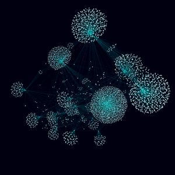

Штуки
Порой я делаю различные вещи, не связанные непосредственно с моей работой (вроде этого сайта). Наверное, это можно считать чем-то вроде хобби.
Многие из них позволили мне отточить те или иные навыки, познакомиться с разными хорошими людьми и вообще всячески прокачаться, поэтому я считаю, что стоит о них упомянуть.
Штуки творческие
Элденъёрд
Настольная ролевая игра, действие которой происходит в одноименном мире, напоминающем Европу в период между двумя мировыми войнами.
Январские ивы
«Скандинавский стимпанк» о войне, одиночестве, долге, предназначении и иных вещах. Неспешность повествования, долгие статичные планы и безысходность в наличии. Следить можно в телеграме.

Ром и метафоры (2012–2016)
Злое городское фэнтези о знании, человеке и его ошибках. Местами шероховатое, местами неотредактированное. Обновленная версия здесь.
Штуки программистские

Tweetscape (2019)
Трехмерное представление связей между пользователями Твиттера, основанное на открытых данных о том, кого пользователи фолловят. Есть двумерная версия (она менее требовательна к ресурсам).

Akiramenai (2012–2015)
Андроид-приложение для подготовки к Нихонго норёку сикэн (Japanese-Language Proficiency Test). Выступил в качестве программиста.